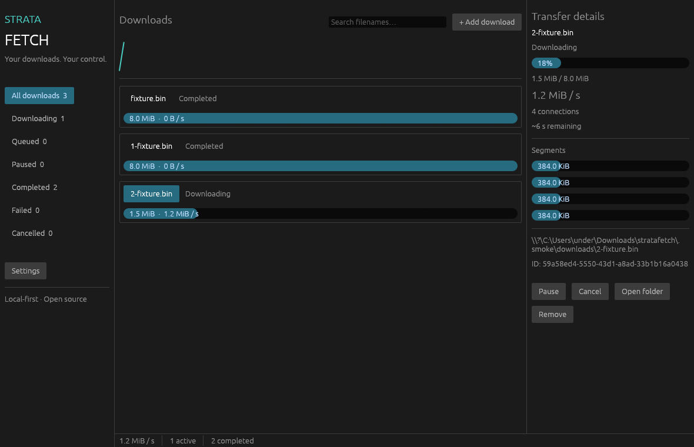

Open source · Development previewYour downloads.
Your control.
StrataFetch is a native Rust download manager with verified byte-range transfers, persistent recovery, and a desktop interface. No ads, accounts, or telemetry.
Source publication pending · Browser integration · Verification record
No public release is available yet. Windows x64 is the primary target; other platforms need CI validation.
Actual application; a deterministic 8 MiB local fixture download.
Reliability before promises
Downloads stream to disk. Supported servers use concurrent ranges with exact response validation. Partial-file checksums protect recovery, and final publication preserves existing files.
Native and local
The desktop uses Rust, egui, and wgpu. The CLI and browser bridge communicate with a single local engine. All history stays on your computer.
Transparent progress
Scheduling, dynamic segmentation, installers, and fully validated browser integration remain on the roadmap. No speed claims or staged screenshots are presented.